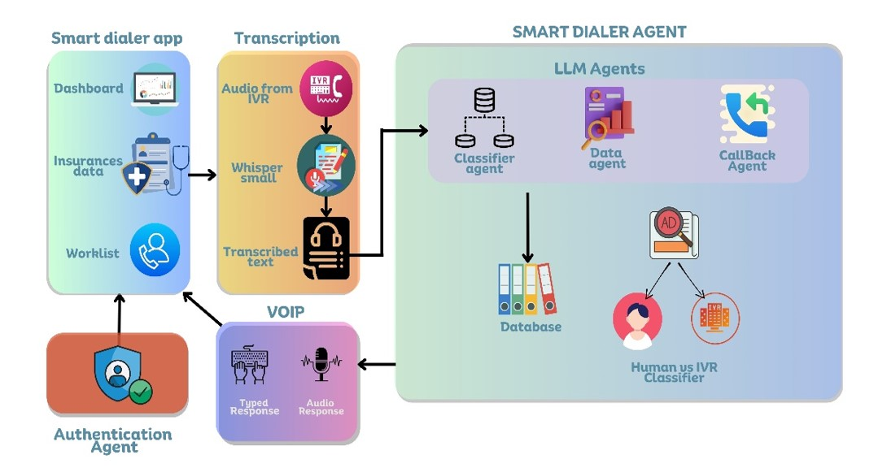

SmartDialer 2.0
Industry Project CureMD AI Engineer
SmartDialer 2.0 is an intelligent multi-agent system (MAS) designed to automate interactions with insurance IVR systems. It uses LLM-based agents to interpret IVR queries, trigger appropriate responses, and dynamically adjust to new workflows — replacing manual intervention in legacy SmartDialer processes.
1) Problem Statement
Develop a system that automatically understands queries from dynamic insurance IVRs and responds with the required data using specialized LLM agents, minimizing human input.
2) Objectives
- Enable LLMs to comprehend IVR prompts and extract actionable information.
- Reduce manual configuration while adapting to frequent IVR menu changes.
- Scale to handle multiple insurance providers and workflows seamlessly.
3) Methodology
The project progressed from manual data extraction toward a fully autonomous LLM pipeline. We introduced task-specific agents to divide responsibilities:
- Agent 1: Extracts keywords and required data.
- Agent 2: Determines callback or response actions.
- Classifier Agent: Filters irrelevant inputs before processing.
Testing on 100 call transcripts achieved 96% accuracy in interpreting and responding to IVR prompts efficiently.

4) Key Features
- Dynamic Prompt Adjustment: Adapts to varying IVR sentence structures.
- Context Reconstruction: Adds missing context from noisy transcriptions.
- Scalable MAS Design: Each agent operates independently via message passing.
- Integrated Testing: Evaluated with live IVR call samples under server deployment.
5) Results & Performance
- Achieved 96% task accuracy across 100 real-world IVR interactions.
- Reduced manual post-processing by 85% compared to earlier SmartDialer.
- Improved response latency through task specialization and prompt optimization.